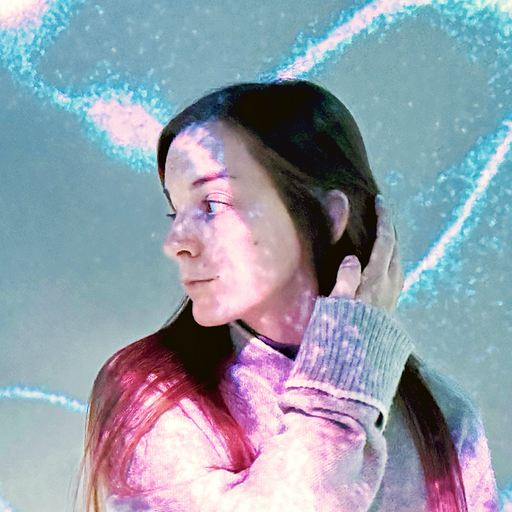
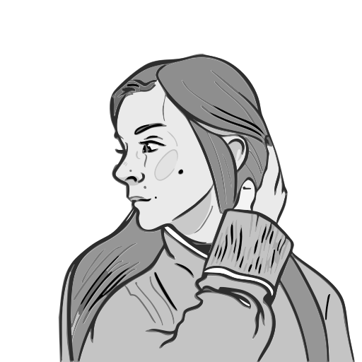

Tools
Figma
Sketch
Webflow
Claude
Skills
UI/UX Design
Product Design
User Research
Prototyping
Motion Design
Videography
Branding
Accessibility Design
Languages
Hungarian
English
Italian
About Me
Senior Product Designer creating playful, accessible, and scalable digital experiences. Focused on large-scale platforms, improving legacy UX, and designing for accessibility. Experienced in UX research, product discovery, and cross-functional collaboration.
Designing tools that empower educators and learners to find, share, and manage educational resources. Leading UX for Commons (Learning Object Repository) and Canvas content-sharing features with a focus on accessibility, efficiency, and quality.
Responsible for UX/UI design and web design across multiple projects with a focus on clean digital experiences and usability.
Interaction design, animation, videography, illustration, and UI for digital and print platforms. Worked with clients like Peek & Cloppenburg, Scalameter, CQST, FARM42, Museum of Ethnography, and more.
Created illustrations and animations for software advertising materials. Supported documentation and visual design tasks across digital projects, focusing on clear visual storytelling and brand consistency.
Graphic & Motion Designer (Freelance)
Self-employed
2016 – Present
Designing visual identities, motion graphics, and illustrations for various clients. Providing end-to-end creative direction across print and digital media, with a focus on clean, expressive design and engaging animation.